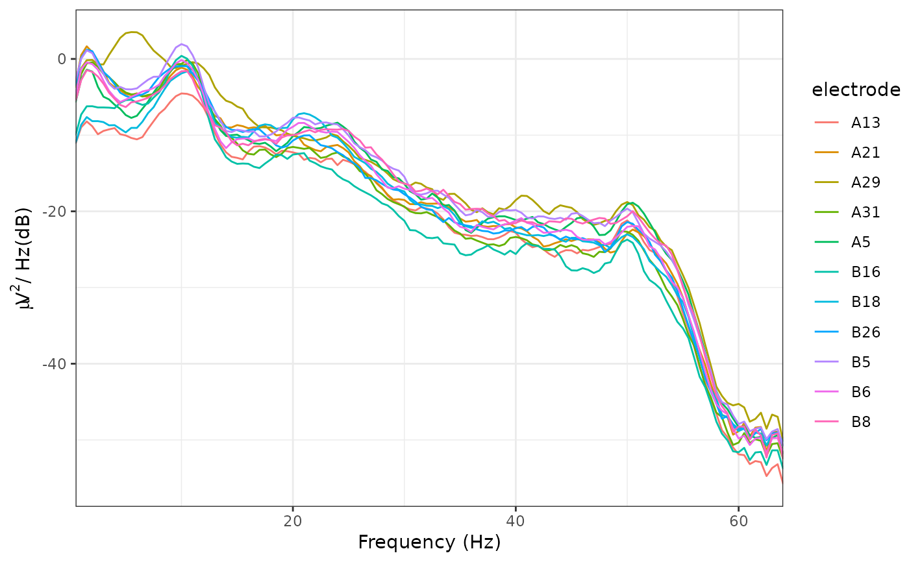

Calculate and plot the PSD for eeg_* objects. Output units are dB. The
PSD is calculated using Welch's method.
Usage
plot_psd(data, freq_range = NULL, ...)
# S3 method for class 'eeg_epochs'
plot_psd(
data,
freq_range = NULL,
n_fft = 256,
seg_length = NULL,
noverlap = NULL,
demean = TRUE,
keep_trials = TRUE,
...
)
# S3 method for class 'eeg_data'
plot_psd(
data,
freq_range = NULL,
n_fft = 2048,
noverlap = NULL,
seg_length = NULL,
...
)
# S3 method for class 'eeg_ICA'
plot_psd(
data,
freq_range = NULL,
components = NULL,
seg_length = NULL,
noverlap = NULL,
n_fft = 256,
...
)
# S3 method for class 'data.frame'
plot_psd(data, freq_range = NULL, ...)
# S3 method for class 'eeg_evoked'
plot_psd(
data,
freq_range = NULL,
n_fft = 256,
seg_length = NULL,
noverlap = NULL,
keep_trials = TRUE,
...
)
# S3 method for class 'eeg_group'
plot_psd(
data,
freq_range = NULL,
n_fft = 256,
seg_length = NULL,
noverlap = NULL,
demean = TRUE,
...
)Arguments
- data
Object of class
eeg_epochs,eeg_data, oreeg_ICA.- freq_range
Vector of lower and upper frequencies to plot. (e.g. c(1, 40))
- ...
Additional parameters.
- n_fft
Number of points to use for the underlying FFTs. Defaults to 256 for
eeg_epochsor minimum of 2048 or the signal length foreeg_data.- seg_length
Length of individual segments. Defaults to n_fft. Must be <= n_fft.
- noverlap
Amount of overlap between segments, in sampling points. Defaults to 50%.
- demean
Remove epoch means before FFT.
- keep_trials
Whether to keep trial information in the output or average over all trials
- components
Which components to compute the PSD for. Defaults to all.
Details
Welch's method splits the data into multiple segments and then averages over those segments. For epoched data, Welch's FFT is calculated separately for each trial.
Specific parameters such as the number of FFT points and the amount of overlap between segments can be passed to Welch's FFT.
Methods (by class)
plot_psd(eeg_epochs): Plot PSD foreeg_epochs.plot_psd(eeg_data): Plot PSD foreeg_data.plot_psd(eeg_ICA): Plot PSD foreeg_ICAobjectsplot_psd(data.frame): Plot PSD fordata.frames.plot_psd(eeg_evoked): Plot PSD foreeg_evokedobjectsplot_psd(eeg_group): Plot PSD foreeg_groupobjects is not currently supported
Author
Matt Craddock, matt@mattcraddock.com
Examples
plot_psd(demo_epochs)
#> Removing channel means per epoch...
#> Computing Power Spectral Density using Welch's method.
#> FFT length: 256
#> Segment length: 84
#> Overlapping points: 42 (50% overlap)

plot_psd(demo_epochs, seg_length = 256)
#> Removing channel means per epoch...
#> Computing Power Spectral Density using Welch's method.
#> FFT length: 256
#> Segment length: 84
#> Overlapping points: 42 (50% overlap)